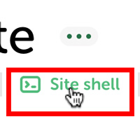
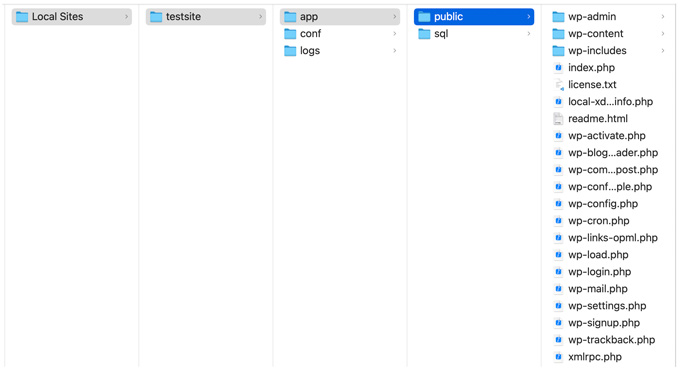

WordPress - ファイル構成
- Local by Flywheel のローカル環境では、「Local sites/サイト名/app/public/」がホームディレクトリとなる

ファイルの設置場所を確認する

ファイル構成
- 「Local sites/サイト名/app/public/」を開くと、構成するファイルを確認できます
index.php
- ブラウザからWordPressサイトにアクセスした際に、最初に読み出されるファイル
wp-config.php
- インストール完了時に自動的に作成される「初期設定ファイル」
/wp-includes
- 関数をしているPHPファイルを格納
/wp-admin
- 「管理画面」で呼び出されるファイルを格納
.htaccess
- 「Weサーバーの設定」を上書きするための設定ファイル
- パーマリンクの設定を変更したときに生成されるファイル
/wp-content/languages
- 「翻訳ファイル」を格納
/wp-content/uploads
- 投稿から「アップロードした画像ファイル」を保存
/wp-content/plugins
- 「プラグイン」を格納
/wp-content/themes
- 「テーマファイル」を保存